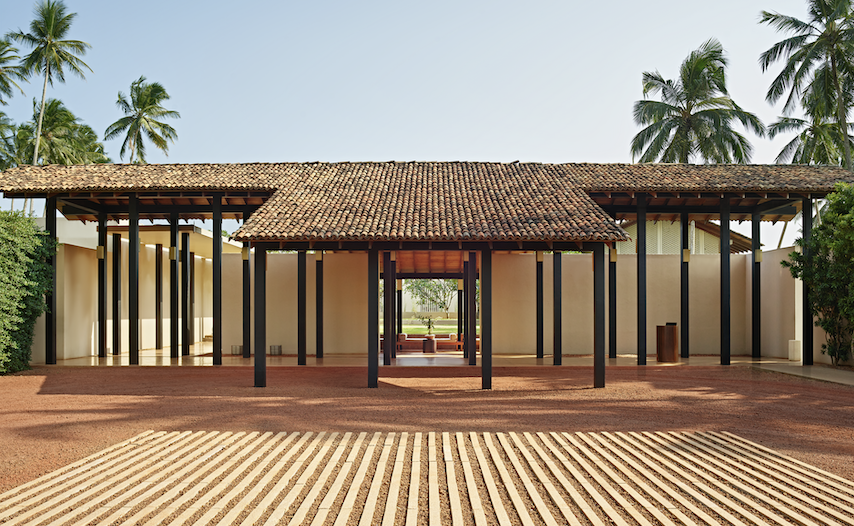

We've organised this list to help you plan a journey rather than simply choose a hotel. Sri Lanka's regions each offer something distinct — the south coast for beach and wildlife, the cultural triangle for history and nature, and the hill country for cool air and extraordinary landscapes. The best family trips weave two or three of these together, with the right properties anchoring each chapter.
Sri Lanka is a rare kind of destination — one where a family can be on safari in the morning, swim in a pool overlooking the Indian Ocean by afternoon, and fall asleep to the sound of the jungle at night. What makes it work so beautifully for families is the variety: multiple regions, each with its own character, and a collection of properties that have genuinely thought about what travelling with children means. These ten resorts do it exceptionally well.
01 · South Coast

Cape Weligama
Weligama Bay · Relais & Châteaux
Cape Weligama sits high on a headland above Weligama Bay, and it remains the benchmark for family luxury on Sri Lanka's south coast. The recent 2025 renovation has made it better than ever — eight sets of interconnecting suites now provide seamless space for families and multi-generational groups, each with a private terrace and panoramic sea views that belong in a film.
The Forest School is what sets Cape Weligama apart from every other luxury property on the island. Set among palms at the edge of the grounds, it runs structured daily sessions divided into four age groups — two to five, six to eight, nine to twelve, and thirteen to fifteen — so no child is grouped with someone too young or old. Activities shift with the day: tree climbing, nature treasure hunts, Sri Lankan cooking classes, pottery, and guided wildlife walks through the property's twelve acres. Parents consistently report that children beg to go back. There's also the shallow Cove Pool designed specifically for young swimmers, while the cliffside infinity pool offers parents exactly the view they need.
Forest School (Ages 2–15)
Interconnecting Suites
Cove Pool for Kids
Junior Chef Programme
Surf Lessons
The Forest School — Cape Weligama's outdoor classroom
Destinova Insider
Request an interconnecting suite when you book — they're popular and go quickly during peak season (December to March). The Forest School requires pre-booking for the surf lesson and Junior Chef sessions specifically; we handle this as part of every itinerary we build here.
02 · South Coast
Shangri-La Hambantota
Hambantota · South-East Coast
If Cape Weligama is the intimate choice, Shangri-La Hambantota is the grand one. Set between the Indian Ocean and a 22-hectare nature reserve, this is Sri Lanka's most complete resort for families who want everything in one place — and genuinely exceptional facilities to back it up.
The Cool Zone Kids' Club runs immersive daily programmes with dedicated staff and its own well-equipped space. Beyond the club, the property features a flying trapeze, a water park with slides and splash features, an 18-hole golf course, and an Aqua Zone activity pool. The resort's location is also a strategic advantage: Yala National Park is under an hour's drive, making morning game drives an easy addition to a beach day. Wild elephants and peacocks regularly wander the resort's own grounds — nature doesn't wait for a scheduled excursion here.
Cool Zone Kids' Club
Water Park
Flying Trapeze
Yala Safari Access
18-Hole Golf
03 · South Coast
Anantara Peace Haven Tangalle
Tangalle · Southern Province
Anantara Peace Haven is set across 21 acres of rolling coconut plantation directly above a secluded sandy beach — and the sense of space it gives you is remarkable. Families spread naturally here, with villas, infinity pools, and garden pathways creating a resort that never feels crowded regardless of occupancy.
The Joli Kids' Club offers a well-rounded programme: cooking classes where children learn to make Sri Lankan hoppers and kottu roti, arts and crafts sessions, outdoor adventures, and a dedicated kids' pool with slides. Older children can join surf lessons or badminton sessions on the resort courts. The beach below — accessed by a winding path through the palms — is one of the more beautiful stretches on the south coast, calm enough for swimming in season and dramatic enough on windier days to make for excellent rock-pool exploring.
Joli Kids' Club
Private Beach
Surf Lessons
Sri Lankan Cooking for Kids
21-Acre Estate
04 · South Coast
Jetwing Lighthouse
Galle · Geoffrey Bawa Architecture
Jetwing Lighthouse holds a particular place in Sri Lanka's hotel landscape — designed by Geoffrey Bawa, Sri Lanka's most celebrated architect, it stands on a rocky promontory just outside Galle Fort and manages to feel like a genuine landmark rather than simply a hotel. For families, it offers the rare combination of architectural beauty and genuine practicality.
Ocean-facing family suites and interconnecting room options provide space without sacrificing the design integrity that makes the property special. A dedicated children's pool sits separately from the main pool — an arrangement parents with young children invariably appreciate. The location is ideal for day trips: Galle Fort is minutes away, whale watching can be arranged through the hotel (humpbacks and blue whales are frequently spotted off the south coast from November to April), and Mirissa beach is a short drive east.
Dedicated Children's Pool
Family Suites
Galle Fort Access
Whale Watching
Geoffrey Bawa Design
"Sri Lanka works because the variety is real. You're not choosing between a beach trip and a cultural trip — you're doing both, with wildlife threaded through it, and the right properties make every chapter feel seamless."
05 · South East

Uga Chena Huts
Yala · Uga Escapes Collection
There is nothing quite like Chena Huts for families who want their children to grow up knowing what a leopard looks like in the wild. Set on seven acres bordering Yala National Park — home to the highest density of leopards in the world — the fourteen private cabins each have their own plunge pool and accommodate two adults and two children with the kind of ease that makes you wonder why more properties aren't designed this way.
Game drives into Yala are the centrepiece of any stay, and the expert naturalist guides at Chena Huts are patient with young guests, taking time to explain animal behaviour and the ecosystem rather than simply chasing sightings. Elephants, crocodiles, sloth bears, and water buffalo are common encounters alongside the park's famous leopards. The private plunge pools provide a perfect retreat after the morning drive, and evening campfire sessions under an enormous star field complete the experience.
Private Plunge Pool Per Cabin
Yala Safari Access
Expert Naturalist Guides
Campfire Evenings
14 Private Cabins
Private cabin with plunge pool — Uga Chena Huts, Yala
06 · South East

Wild Coast Tented Lodge
Kumana · Resplendent Ceylon
Wild Coast Tented Lodge occupies a different part of the south-east coast from Chena Huts — near Kumana National Park, where a quieter wilderness meets a stunning stretch of Indian Ocean beach. The sculptural, cocoon-shaped tents are among the most architecturally striking places to sleep in Asia, and for children they carry an irresistible sense of adventure. Each tent has its own private plunge pool.
The resident naturalist team leads morning and evening wildlife expeditions adapted for families, and the property's genuine wilderness setting — wild elephants move through the grounds at night — creates the kind of immersive experience that stays with children far longer than any theme park. The on-site culinary programme is particularly thoughtful, with interactive cooking sessions that bring local ingredients and Sri Lankan recipes to life for younger guests.
Private Plunge Pools
Beachfront Location
Family Wildlife Expeditions
Kumana National Park
Kids Cooking Programme
Wild Coast Tented Lodge — where the Indian Ocean meets the wild south-east
Destinova Insider
Wild Coast pairs beautifully with Chena Huts as a two-lodge south-east circuit. Four nights split across both properties gives families a complete coastal and wildlife experience in one seamless journey without any lengthy transfers.
✦
07 · West Coast
Jetwing Blue
Negombo · Arrival & Departure Hub
Jetwing Blue earns its place on this list for a very practical reason: it sits just fifteen minutes from Bandaranaike International Airport, right on the broad sandy beach of Negombo. For families arriving into Sri Lanka after a long-haul flight, the ability to walk from the car to the pool in under ten minutes — and to the beach minutes after that — is not a small thing. It also makes for a perfect first or last night, easing the transition in and out of the island without an additional transfer.
The property features two pools — a vast beachfront lagoon pool that children can spend entire days in, and a smaller, shaded pool for quieter moments. Family rooms are well-configured, the staff are warm with young guests, and the beach itself offers gentle surf, fishing boat traffic, and the full spectacle of a Sri Lankan seaside morning. Negombo's Dutch fort and the lively fish market make for easy half-day excursions if the family has an extra day before their flight.
15 Mins from Airport
Beachfront Lagoon Pool
Family Rooms
Sandy Beach
Easy First/Last Night
08 · Cultural Triangle
Uga Ulagalla
Near Anuradhapura · Uga Escapes Collection
Uga Ulagalla is a 58-acre estate of ancient paddy fields, forest, and wetland set thirty minutes from the sacred ancient city of Anuradhapura. The 25 villas — some with private plunge pools, some with two bedrooms ideal for families — are scattered across the grounds with remarkable privacy, connected by pathways that wind through a working organic farm and bird-rich wetlands.
The Junior Ranger Programme is the property's defining family offering: children learn wildlife tracking, bird identification, and ecosystem conservation through hands-on sessions led by the resident naturalist team. The organic garden becomes a classroom, with children harvesting and cooking produce as part of guided activities. Culturally, the location is unmatched — Anuradhapura, Polonnaruwa, and Sigiriya Rock Fortress are all within reach, and the team at Ulagalla understands how to present these sites to children in a way that connects rather than overwhelms.
Junior Ranger Programme
Two-Bedroom Villas
Organic Farm Activities
Cultural Triangle Access
Bird-Rich Wetlands
Destinova Insider
We recommend building at least two nights at Ulagalla into any cultural triangle itinerary — one day for Sigiriya and Dambulla, one day for an Anuradhapura exploration, with the Junior Ranger sessions woven around both. The morning light on the paddy fields here is one of the most quietly beautiful things in Sri Lanka.
09 · Cultural Triangle


Heritance Kandalama
Dambulla · Geoffrey Bawa Architecture
Another Geoffrey Bawa masterpiece, Heritance Kandalama is built into a rock face overlooking Kandalama Lake and the ancient landscape of the cultural triangle. The building appears to grow out of the jungle — vines trail across the structure intentionally, birds fly through the open-sided corridors, and monitor lizards are regular visitors to the pool terrace. For children who have never encountered a building quite like this, it is a destination in itself.
The hotel runs a dedicated kids' club with supervised activities, alongside outdoor programming that includes boat rides on the calm lake waters (kingfishers skimming the surface at eye level), guided hikes to Kandalama Rock through forest where children may spot toque macaques and grey langurs, and day trips to the nearby Minneriya National Park for the famous elephant gathering. Sigiriya Rock Fortress is twenty minutes away and, managed well, is one of the most impactful experiences a child can have in Asia.
Geoffrey Bawa Architecture
Kids' Club
Lake Boat Rides
Minneriya Elephant Gathering
Sigiriya Day Trips
Sigiriya Rock Fortress and the Minneriya Elephant Gathering — both within reach of Kandalama
10 · South Coast
Amanwella
Tangalle · Aman Resorts
Amanwella is the quietest entry on this list, and deliberately so. Thirty suite villas cascade down a hillside above a secluded sandy cove near Tangalle — each with a private infinity pool, a sun deck, and views over the Indian Ocean that make time pass differently. For families with older children who appreciate space, privacy, and a slower pace, there is nothing better in Sri Lanka.
The Aman approach to family travel is understated but genuine: the team adapts entirely to each family's rhythm, the beach below the property is calm enough for swimming through much of the season, and the surrounding landscape of coconut groves and rice paddies is perfect for morning bicycle rides or village walks. Turtle nesting activity in the area (late November through March) can be observed through responsible local programmes that the hotel can arrange. Amanwella is the chapter in a Sri Lanka journey where everything slows down to the right speed.
Private Infinity Pool Per Villa
Secluded Beach Cove
Turtle Nesting Experiences
Bicycle & Village Rides
Aman Personalised Service

Amanwella — where the Indian Ocean and complete privacy meet
✦
Planning Your Trip
How to Put It Together
The most successful family trips to Sri Lanka don't pick one resort and stay put — they use the island's compact size to move through two or three distinct regions, with each property anchoring a different chapter. A classic approach: two nights on the west coast (Negombo) on arrival, four nights in the south (Cape Weligama or Anantara Tangalle), three nights in the south-east (Chena Huts or Wild Coast), and three nights in the cultural triangle (Ulagalla or Kandalama). Two to three weeks, multiple worlds, one seamless journey.
The best time for families is broadly December through March on the south coast and hill country, and May through September on the east coast. Many of these properties operate year-round, but sea conditions, wildlife patterns, and weather all shift by region and by month — and this is where working with someone who knows the island well makes a significant difference.
Plan Your Family Journey
Let us design your Sri Lanka
Every family travels differently. We'll build an itinerary around how yours moves, what your children love, and the moments that will matter most — from the right properties to the right timing.
Start Planning Explore Sri Lanka